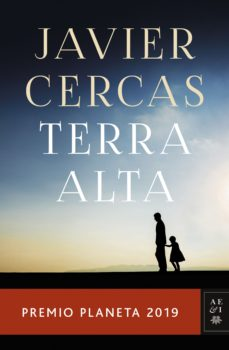

Ficha técnica
- Título: Terra Alta
- Resumen: Él era un hombre justo, el mundo no. Terra Alta, un thriller impactante. Un crimen terrible sacude la apacible comarca de la Terra Alta: los propietarios de su mayor empresa, Gráficas Adell, aparecen asesinados tras haber sido sometidos a atroces torturas. Se encarga del caso Melchor Marín, un joven policía y lector voraz llegado desde Barcelona cuatro años atrás, con un oscuro pasado a cuestas que le ha convertido en una leyenda del cuerpo y que cree haber enterrado bajo su vida feliz como marido de la bibliotecaria del pueblo y padre de una niña llamada Cosette, igual que la hija de Jean Valjean, el protagonista de su novela favorita: Los miserables. Partiendo de ese suceso, y a través de una narración trepidante y repleta de personajes memorables, esta novela se convierte en una lúcida reflexión sobre el valor de la ley, la posibilidad de la justicia y la legitimidad de la venganza, pero sobre todo en la epopeya de un hombre en busca de su lugar en el mundo.
- Editorial: PLANETA
- ISBN: 9788408217848
- Autores:
- Imagen de portada:
